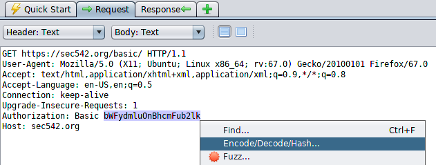

Successfull Authentication (example)
Configre the proxy on the Browser, to intercept it with ZAP
Successfull Authentication
1. Go to the webpage Form login
2. Check History Tab
3. Request

decode manually via shell